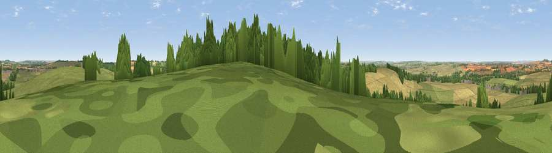

Viewpoint near Firsdown
#15799 in England · top 10% of its area beats it · near Firsdown · access?Where it is
The exact computed spot (SU 20225 34425). Click the marker for map links.
Public access: no public right of way or access land is recorded at this exact spot — it may be on private land. Computed from Natural England's CRoW access layer and OpenStreetMap rights of way — not the legal definitive map. Always verify locally.
The view, rendered

A 360° render of this exact spot computed from the terrain model, tree cover and land cover — summer colours, afternoon light, calibrated against photographs of famous viewpoints. Real trees, hedges and buildings will differ in detail.
The panorama
Grey silhouette: terrain skyline in each direction (720 bearings, Earth curvature and refraction included). Dashed green: skyline with trees (+15 m) and buildings (+8 m) as obstacles. Blue strip: how far the ground is visible on each bearing.
Where the view opens
Wedge length = distance to the farthest visible ground on that bearing (vegetation-aware). Rings at 10, 25 and 50 km.
What fills the view
47% cropland · 40% grassland · 11% woodland · 2% built-up
Angular shares of the visible panorama (visual magnitude), not map area. Landscape diversity 0.45 (0–1 Shannon).
Key numbers
More beautiful places nearby
The staircase of upgrades: each row has a higher view potential than everything closer. Driving times are estimates from straight-line distance, calibrated against real road routing — check an actual route before setting out.
| Place | Direction | Drive | Score |
|---|---|---|---|
| Viewpoint near Firsdown | NE · 1 km | ~2 min | 57.9 |
| Cockey Down | SW · 4 km | ~9 min | 60.3 |
| Kent's Wood | E · 7 km | ~15 min | 60.9 |
| Viewpoint near Bulford | N · 8 km | ~17 min | 70.3 |
| Viewpoint near Oare | N · 29 km | ~46 min | 72.9 |
| Martinsell viewpoint | N · 29 km | ~46 min | 76.9 |
| Viewpoint near Berwick St John | WSW · 31 km | ~48 min | 78.2 |
| West High Down | SSE · 51 km | ~72 min | 79.8 |
51.10877, -1.71248 · source: screening · position refined by local search. Computed location — check access rights before visiting.